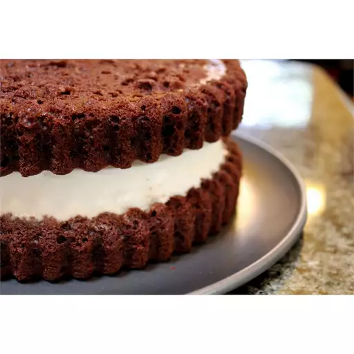

Ice Cream Cake Recipe

Description
This ice cream cake is easy to make with any flavor of ice cream or cake mix you prefer. Frost with your favorite frosting, fudge topping, crushed Oreos, or anything!
ingredients
- Cake Mix
- water
- Eggs
- Oil
- Ice Cream
Steps
- Preheat the oven to 350 degrees F (175 degrees C). Grease a 9x13-inch baking dish.
- Combine chocolate cake mix, water, eggs, and oil in a large bowl. Beat with an electric mixer on medium speed until smooth, about 2 minutes. Pour batter into the prepared baking dish.
- Bake in the preheated oven until a toothpick inserted into the center comes out clean, 26 to 30 minutes. Allow to cool completely on a wired rack.
- Meanwhile, remove the carton paper from ice cream. Set ice cream block on its long side. Use a piece of string or dental floss to cut ice cream in half lengthwise, then place the 2 pieces side-by-side on a sheet of waxed paper.
- Remove cooled cake from the baking dish and place over the ice cream slabs. Trim cake and ice cream, so the edges are flush.
- Place a board or serving platter over cake. Holding onto the waxed paper and board, flip ice cream cake over. Remove the waxed paper and smooth the seam between the ice cream slabs.
- Cover top with waxed paper and freeze until very firm. Decorate as desired.